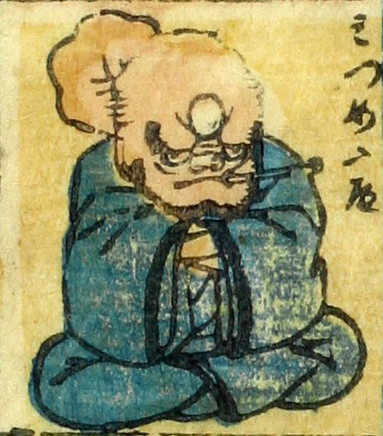

三つ目；ミツメ，入道；ニュウドウ，男；オトコ

三つ目入道。頭は禿げていて、額に3つ目の目がついており、煙管を咥えている。長い首を曲げているように見える。青い着物をまとって、腕を組みながら座っている。
著作者：芳盛／出典：親書誌：U426_nichibunken_0073：しん板化物尽し；シンパンバケモノヅクシ／日付：2006／資源識別子：U426_nichibunken_0073_0036_0000
Copyright (c)2010- International Research Center for Japanese Studies, Kyoto, Japan. All rights reserved.